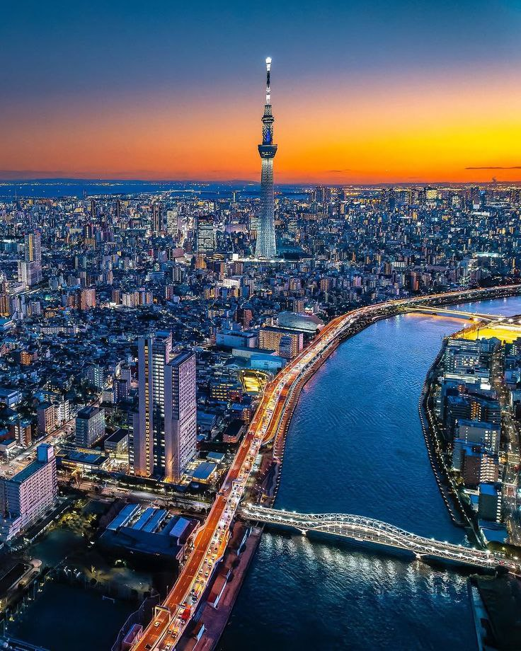

Токіо

Токіо — столиця Японії та одне з найбільших міст світу. Це місце, де ультрасучасні технології, багатомільйонні натовпи й давні традиції існують поруч.
Чому я обрав це місто
Токіо вражає масштабом і водночас порядком: ідеальний транспорт, чистота, неймовірна кухня. Кожен район має свій характер, тож нудно тут не буває.
Цікаві факти
- До 1868 року місто називалося Едо.
- Агломерація Великого Токіо вважається найбільшою за населенням у світі.
- Телевежа Токіо Скайтрі має висоту 634 метри.
Визначні місця
- Перехрестя Сібуя
- Храм Сенсодзі в районі Асакуса
- Святилище Мейдзі
- Телевежа Токіо Скайтрі
- Район Акіхабара
Моя оцінка: 10/10